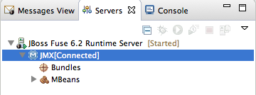

When you are done testing your application, you can disconnect from the server without stopping it.
![[Note]](imagesdb/note.png) | Note |
|---|---|
Servers panel and JMX Navigator are synchronized with regards to server connections, so disconnecting from a server in Servers panel also disconnects it in JMX Navigator, and vice versa. |
In Servers panel, expand the server runtime to expose its
JMX[Connected]node.Right-click the
JMX[Connected]node to open the context menu, and then select .